教学中心 WEB 端
本次改版的核心命题只有一个：把复杂系统翻译成清晰的用户路径。界面上的每一步"减法"，背后都是把复杂度重新分配给信息架构去消化。
面向教师备课、开课与学情管理的核心链路，对教学中心 Web 端做了一次不改业务逻辑的渐进式重构：首屏从「列表＋详情＋课节」的复合结构收敛为课程卡片网格，散落各处的开课记录、学情统计统一挂到课程级导航之下，重排课程、开课记录与学情的信息架构，建立统一的课程级导航与状态规范。
TEACHING CENTER / EXPERIENCE UPGRADE & UI RESTRUCTURE
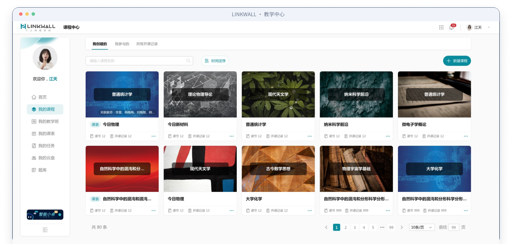
产品设计初期教师、学生、学校管理者、运维人员共同使用同一个平台，并未针对用户目标进行分析，追求通用化导致部分用户使用体验不佳。
贴近教师/学生的使用场景、提高教师/学生的使用效率和满意度。
因项目进度紧张，需求与设计几乎同时进行，总周期大约5周时间。
通用化设计导致用户目标与功能分类不明确；先区分「功能需求」与「真实用户诉求」，再谈界面。
围绕教师「备课—授课—分析」的完整教学链路，聚焦认知、路径、状态三类体验升级。
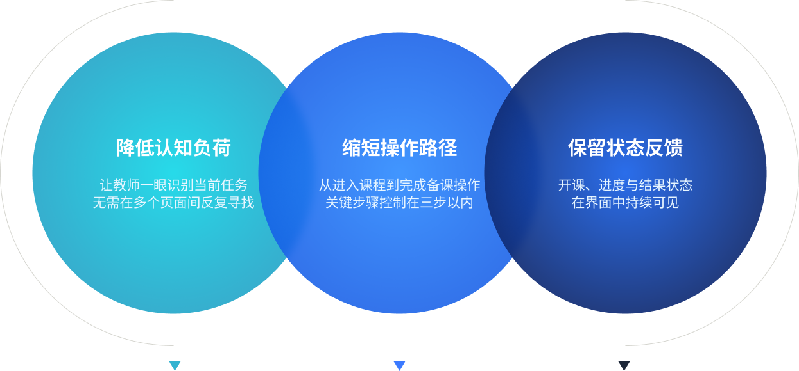
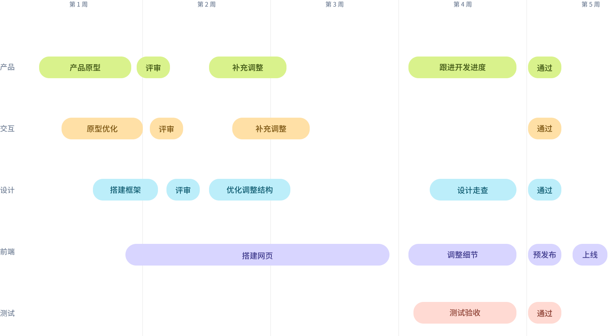
AI 辅助调研分析与任务流拆解，深挖师生场景隐性痛点，锚定设计核心方向。
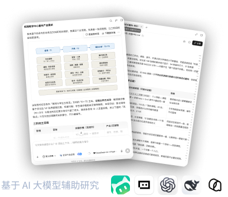
定位课程 → 建教学班/同步名册 → 安排课节 → 添加资源/习题 → 设置预习与任务 → 确认学生端可见
签到入课 → 抽答/推题/投票 → 提问/评分/分组/板书 → 结束开课
看开课记录 → 读讲演报告 → 学情统计/平时分 → 权重设置与导出登分
注：学生端流程与教师端流程对应
AI工具辅助观察旧版页面结构性问题，针对页面问题提出解决方案。
以教师任务流为核心优化流程，再反推学生任务流。
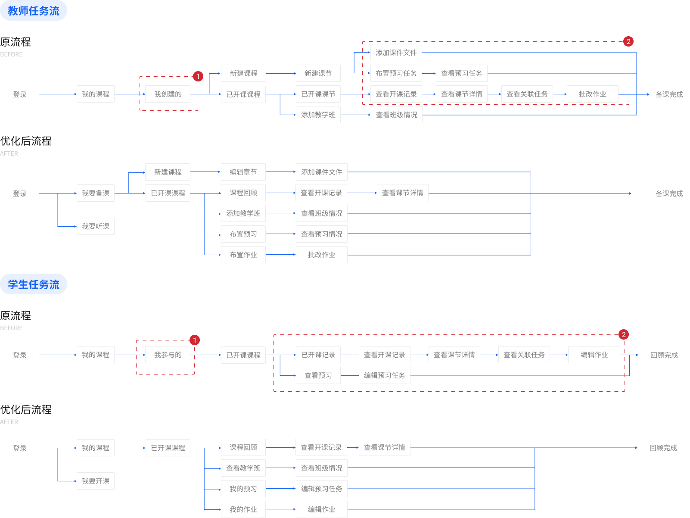
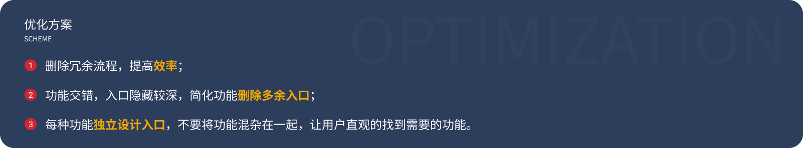
基于教学业务场景，结合 VibeCoding 与结构化指令快速生成可运行原型，覆盖从需求到高保真的全链路设计，高效支撑 0-1 阶段方案验证与快速迭代。
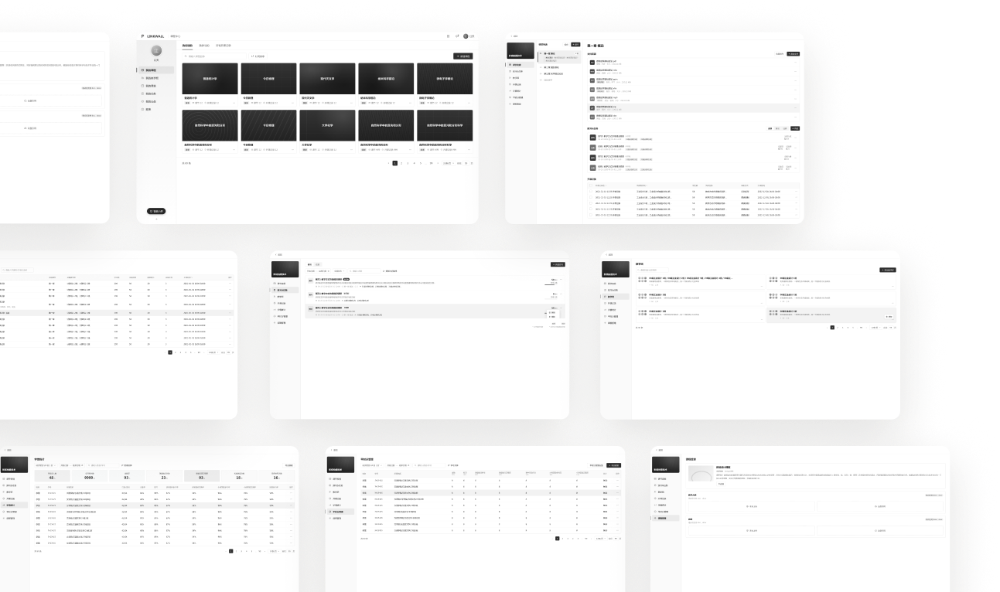
AI工具辅助观察旧版页面结构性问题，针对页面问题提出解决方案。
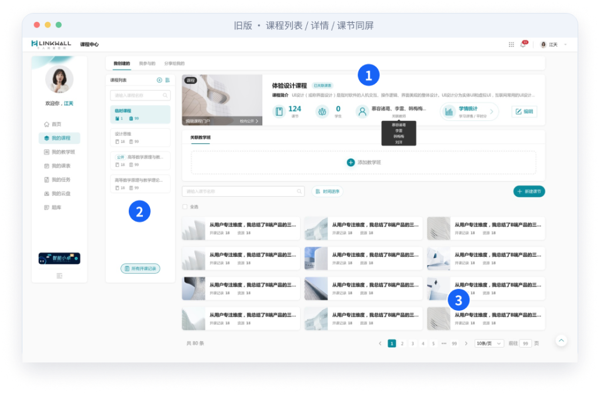
课程列表、当前课程详情与课节等内容同时出现，主任务不够聚焦。
教师需要在课程、课节与记录之间理解各自的层级和入口。
卡片式课节内容，不符合教师对课程章节的认知，也不易阅读。
选课程、看详情、找课节，在一屏内并行争夺注意力。
入口布局需要帮助用户理解自己在哪，以及接下来去哪。
明确告知用户当前状态，并解释完整的下一步。
用课程卡片承接课程识别，把课程内内容留给下一层工作区。
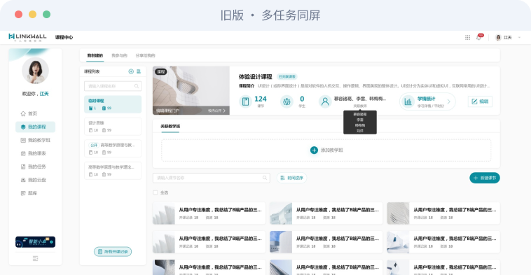
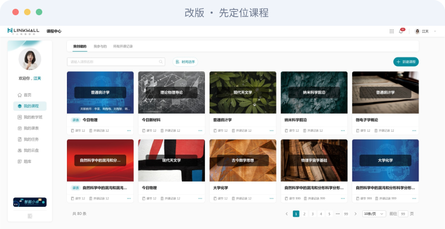
能力落点：任务分层与信息架构。取舍：首屏更聚焦，但直接进入课节是否更快需要实测。
课程级导航、课节列表与内容区并置，帮助用户保留位置感。
处理中、失败与已删除，不只是不同颜色，也需要明确文字与可用性区分。
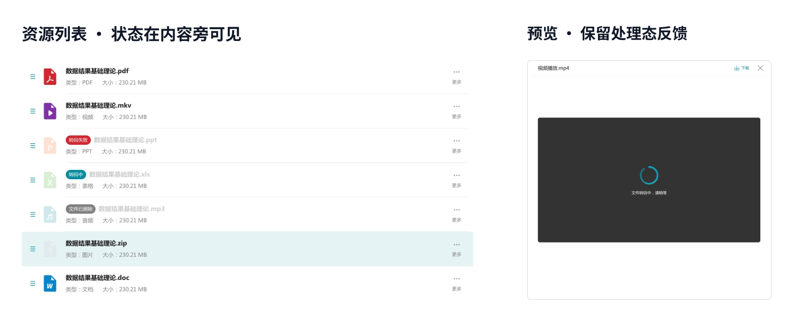
文字说明处理状态，区分当前可用与不可用内容。
用文字标签辅助颜色，避免只靠视觉样式猜测原因。
现有等待提示并非完整闭环，重试、完成通知仍需补充验证。
对照初始设计目标，以行为数据与用户反馈核验优化价值。
梳理设计预期与真实使用的差异，定位边缘场景与体验疏漏。
沉淀组件规范与项目方法论，反哺后续同类项目提效。